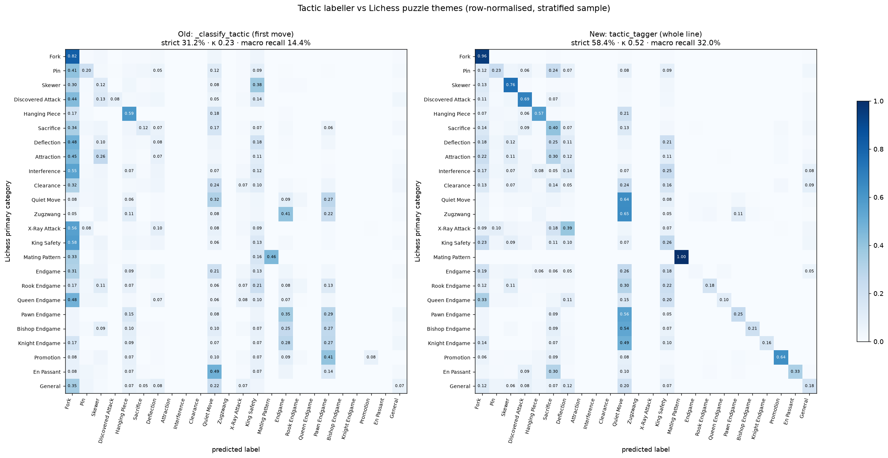
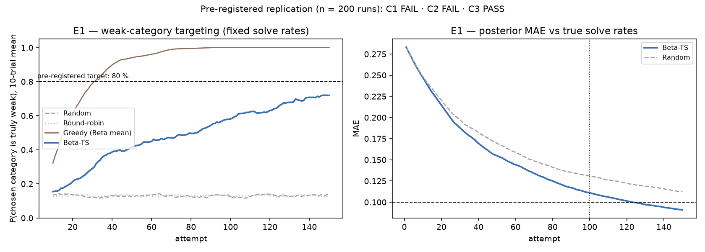
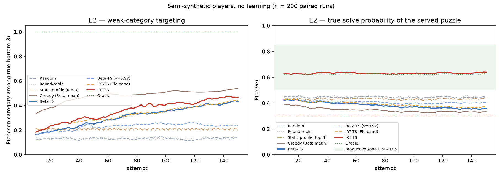
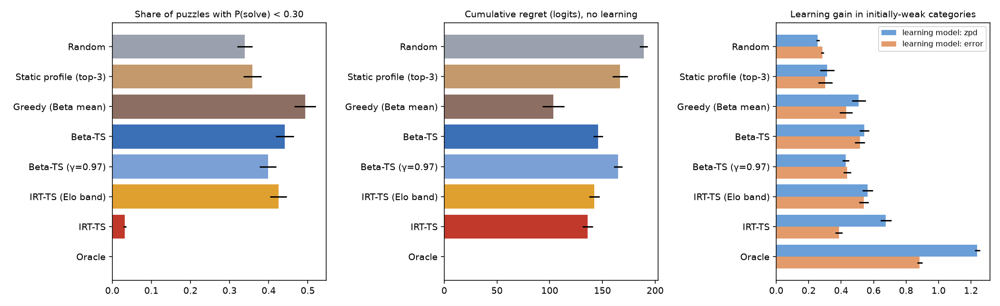
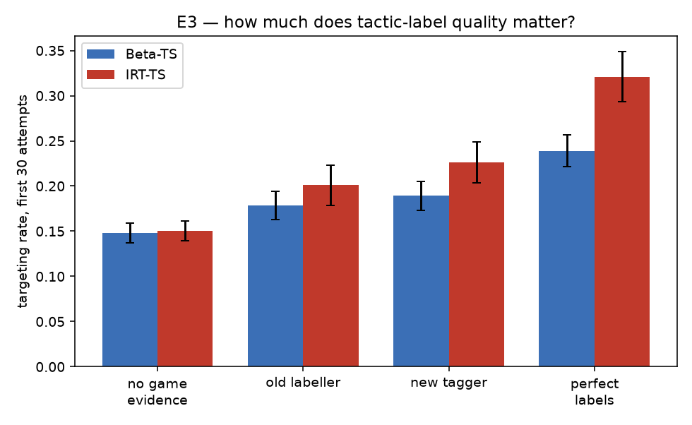
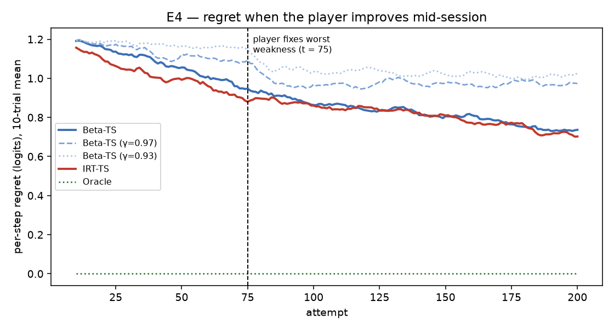
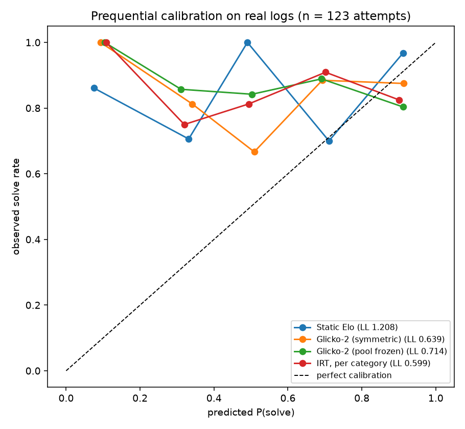

Measurement validity, a pre-registered replication, a paired simulation study,
prequential calibration on real logs, and a real-player cohort evaluation, all generated
from the result files in eval/research/.
Aleksandar Radevski · City College, University of York · 22 September 2026
Every weakness estimate in the system depends on the tactic label attached to each missed move.
It decides which bandit arm the evidence goes to. So I measured the original labeller
(generator._classify_tactic) against an independent reference: the themes of Lichess puzzles,
resolved with the same priority rule the puzzle pool uses. Lichess themes come from an automatic
tagger too, so these numbers measure agreement, not accuracy against human judgement.
There are two samples: a uniform one of 30,000 puzzles (for prevalence-true agreement and κ)
and a stratified one of 48,000 puzzles, up to 2,000 per class (for per-class recall).
The original labeller scored κ = 0.23 ("fair" agreement on the Landis & Koch scale [8]).
It could never emit 8 of the 23 categories. Its failures were structural. It looked
at a single move, so a mate in three was labelled as its opening check. It treated the king as a high-value
fork target. And its skewer and X-ray rules were geometrically wrong. The replacement,
src/puzzles/tactic_tagger.py, tags the engine's whole principal variation, uses the engine's mate
verdict, gets pin and skewer from ray geometry, and takes endgame type from the material left on the board.
It was developed on one sample (seed 7) and then scored on a fresh held-out sample (seed 11):
| Metric | Old labeller | New tagger (held-out) | New tagger (development) |
|---|---|---|---|
| Strict agreement | 31.2% | 58.4% | 57.6% |
| Lenient agreement (any mapped theme) | 37.4% | 60.9% | 60.2% |
| Cohen's κ | 0.23 | 0.52 | 0.51 |
| Macro recall (stratified) | 14.4% | 32.0% | 31.6% |
| Macro precision (uniform) | 30.3% | 53.7% | 53.4% |
| Categories never emitted | 8 | 5 | — |
| Category | Recall old | Recall new | Precision old | Precision new |
|---|---|---|---|---|
| Mating Pattern | 0.46 | 1.00 | 1.00 | 1.00 |
| Fork | 0.82 | 0.96 | 0.25 | 0.61 |
| Skewer | 0.12 | 0.76 | 0.06 | 0.36 |
| Discovered Attack | 0.08 | 0.69 | 0.71 | 0.58 |
| Promotion | 0.08 | 0.64 | 0.77 | 0.87 |
| Pin | 0.20 | 0.23 | 0.42 | 0.43 |
| Hanging Piece | 0.59 | 0.57 | 0.33 | 0.53 |

Synthetic players with known weaknesses, puzzle difficulties drawn from the real Lichess distribution for each category, game evidence mislabelled with the measured confusion matrix of the real tagger, and the production policy classes run unmodified. Every comparison is paired: 200 seeds, each facing every policy with the same player. Tests are paired t-tests with Holm correction [9], effect sizes are Cohen's dz, and CIs are bootstrap.
This is the protocol fixed before any result existed: three categories solved 30% of the time, twenty at 80%, 200 runs of 150 attempts, uniform priors, and the original Beta Thompson bandit.
| Pre-registered criterion | Threshold | Result [95% CI] | |
|---|---|---|---|
| C1 weak-category targeting, trials 131–150 | ≥ 80% | 71.4% [0.695, 0.732] | FAIL |
| C2 posterior MAE at trial 100 | ≤ 0.10 | 0.111 [0.108, 0.114] | FAIL |
| C3 vs random: Welch's t, p < 0.01 and d > 0.8 | both | p < 0.0001, d = 5.38 | PASS |

| Policy | Targeting, last 50 | Cum. regret | Frustrating puzzles (P < 0.3) | In productive zone | Top-3 recall |
|---|---|---|---|---|---|
| Random | 0.130 | 189.2 | 33.8% | 37% | 0.40 |
| Round-robin | 0.132 | 189.1 | 33.6% | 37% | 0.41 |
| Static profile (top-3) | 0.206 | 166.6 | 35.8% | 36% | 0.26 |
| Greedy (Beta mean) | 0.520 | 103.5 | 49.3% | 25% | 0.26 |
| Beta-TS | 0.404 | 145.9 | 44.1% | 29% | 0.45 |
| Beta-TS (γ=0.97) | 0.244 | 164.9 | 39.8% | 32% | 0.35 |
| IRT-TS (Elo band) | 0.409 | 142.3 | 42.5% | 31% | 0.49 |
| IRT-TS | 0.445 | 135.9 | 3.2% | 72% | 0.49 |
| Oracle | 1.000 | 0.0 | 0.0% | 82% | 1.00 |
Paired against the original Beta-TS policy (no learning), the new difficulty-aware IRT-TS policy shows: targeting +0.041 [0.002, 0.081] (pHolm 0.089); cumulative regret -10.0 [-15.3, -4.8] (pHolm 0.0006); share of frustrating puzzles -0.410 (dz = -2.52).

A learning gain in simulation follows from an assumed learning model, so it is reported under two. Under "zpd", players learn most from puzzles near the edge of their ability. Under "error", they learn from seeing the solution after a miss. The gain is the mean improvement of the initially weak categories, in logits:
| Learning model | Random | Beta-TS | IRT-TS | IRT-TS − Beta-TS (paired) |
|---|---|---|---|---|
| zpd | 0.256 | 0.543 | 0.675 | +0.133 [0.092, 0.174], dz = +0.45, pHolm < 0.0001 |
| error | 0.284 | 0.516 | 0.386 | -0.130 [-0.163, -0.098], dz = -0.53, pHolm < 0.0001 |

docs/USER_STUDY_PROTOCOL.md).| Game evidence | Beta-TS targeting, first 30 | IRT-TS targeting, first 30 |
|---|---|---|
| No game evidence | 0.148 | 0.151 |
| Old labeller | 0.178 | 0.201 |
| New tagger | 0.189 | 0.226 |
| Perfect labels | 0.239 | 0.321 |
Paired within IRT-TS: game evidence against none gives +0.075 (p < 0.0001). The new tagger against the old gives +0.025 (p 0.062). Perfect labels against the new tagger give +0.095 (p < 0.0001).

At t = 75 the player's worst category improves by 1.5 logits away from the app. The metric is cumulative regret over the remaining 125 attempts:
| Policy | Post-change regret [95% CI] | vs Beta-TS |
|---|---|---|
| Beta-TS | 102.1 [98.2, 106.0] | reference |
| Beta-TS (γ=0.97) | 121.3 [118.3, 124.4] | +19.2, dz = +0.82 |
| Beta-TS (γ=0.93) | 128.2 [125.4, 131.0] | +26.1, dz = +1.01 |
| IRT-TS | 100.7 [97.2, 104.3] | -1.4, dz = -0.04 |
| Oracle | 0.0 [0.0, 0.0] | -102.1, dz = -3.66 |

The IRT prior can link related motifs, so that evidence about pins also moves skewers. The difference (family prior minus plain prior) is tested on populations with and without real family structure:
| Population | Metric | Difference [95% CI] | dz | p |
|---|---|---|---|---|
| no family structure | targeting first30 | +0.018 [0.006, 0.029] | +0.21 | 0.003 |
| no family structure | cum regret | -0.471 [-3.655, 2.637] | -0.02 | 0.771 |
| weaknesses cluster in one family | targeting first30 | +0.009 [-0.004, 0.022] | +0.09 | 0.186 |
| weaknesses cluster in one family | cum regret | -2.860 [-5.598, -0.167] | -0.15 | 0.040 |
E2 assumed large, well-separated weaknesses, but the real cohort (§4) found far subtler category effects. E7 repeats the key comparison using the cohort's measured category frequencies and hit rate, in three worlds with progressively weaker category effects:
| World | Targeting, last 50: Random / Beta-TS / IRT-TS | Beta-TS − Random | IRT − Beta | Frustrating puzzles: Beta-TS → IRT-TS |
|---|---|---|---|---|
| original assumption (σ 0.35, 3 weak at −1.2) | 0.130 / 0.422 / 0.457 | +0.292 (dz +1.20) | +0.035 (p 0.102) | 45.2% → 3.1% (dz -2.55) |
| subtle weaknesses (σ 0.15, 3 weak at −0.5) | 0.130 / 0.235 / 0.236 | +0.104 (dz +0.55) | +0.001 (p 0.947) | 34.9% → 1.4% (dz -2.14) |
| no category weaknesses (σ 0) | undefined (no true weaknesses) | — | — | 28.0% → 0.9% (dz -1.72) |
The evaluation is prequential [11]: 123 real attempts by 5 players are replayed in time order, and each model predicts every attempt before learning from it. The observed solve rate was 85%, and 68% of attempts were on puzzles mined from the player's own games.
| Model | Log loss ↓ | Brier ↓ | AUC | Mean prediction | Δ log loss vs static Elo [95% CI] |
|---|---|---|---|---|---|
| Base rate | 0.451 | 0.139 | 0.51 | 0.77 | -0.758 [-1.013, -0.513] |
| Static Elo | 1.208 | 0.374 | 0.54 | 0.45 | +0.000 [0.000, 0.000] |
| Glicko-2 (symmetric) | 0.639 | 0.212 | 0.57 | 0.69 | -0.569 [-0.758, -0.375] |
| Glicko-2 (pool frozen) | 0.714 | 0.242 | 0.46 | 0.69 | -0.495 [-0.692, -0.295] |
| IRT, θ only | 0.652 | 0.222 | 0.48 | 0.70 | -0.556 [-0.764, -0.348] |
| IRT, per category | 0.599 | 0.202 | 0.54 | 0.71 | -0.609 [-0.812, -0.406] |

The cohort is 300 Chess.com players (band 0: 60, band 1: 60, band 2: 60, band 3: 60, band 4: 60), stratified by rating and stored pseudonymised. Their games were analysed with the production analyzer. Each player's oldest two-thirds of games are used to predict the critical positions they miss in their newest third. That gives 11,973 held-out opportunities in total. Population-level parameters are always fitted on other players (5-fold, grouped by player).
| Model | Log loss | Brier | AUC | Δ LL vs category base rate [95% CI] | Within-player ρ | Top-3 recall |
|---|---|---|---|---|---|---|
| Global base rate | 0.6545 | 0.2309 | 0.494 | +0.0144 [0.0111, 0.0178] | 0.06 | 0.60 |
| Category base rate | 0.6401 | 0.2245 | 0.582 | +0.0000 [0.0000, 0.0000] | 0.29 | 0.71 |
| Player base rate | 0.6491 | 0.2284 | 0.568 | +0.0091 [0.0036, 0.0146] | 0.06 | 0.60 |
| Rule-based scorer | 0.6547 | 0.2310 | 0.474 | +0.0147 [0.0113, 0.0180] | -0.07 | 0.59 |
| RF (synthetic-trained) | 0.6529 | 0.2300 | 0.505 | +0.0128 [0.0094, 0.0164] | 0.09 | 0.61 |
| EB, shrink to player rate | 0.6506 | 0.2288 | 0.582 | +0.0105 [0.0047, 0.0163] | 0.19 | 0.66 |
| EB, shrink to population norms | 0.6326 | 0.2211 | 0.620 | -0.0074 [-0.0115, -0.0034] | 0.29 | 0.70 |
| RF (real-data) | 0.6321 | 0.2210 | 0.618 | -0.0080 [-0.0115, -0.0045] | 0.28 | 0.71 |
Split-half reliability of each player's category deviation (odd against even games, Spearman–Brown corrected) sets a ceiling on how well any model can personalise:
| Category | Players | Split-half r | Spearman–Brown |
|---|---|---|---|
| Discovered Attack | 24 | 0.37 | 0.54 |
| Mating Pattern | 43 | 0.09 | 0.17 |
| Fork | 227 | 0.08 | 0.15 |
| Quiet Move | 299 | 0.03 | 0.06 |
| Deflection | 48 | 0.02 | 0.04 |
| Hanging Piece | 148 | -0.06 | — |
| King Safety | 54 | -0.08 | — |
| Sacrifice | 41 | -0.46 | — |
Across players, the noise-corrected spread of category deviations is σ ≈ 0.0 logits (observed 0.853), and the overall hit rate in critical positions is 0.649. The simulation assumed a background σ of 0.35, with 3 categories at −1.2.
The within-family correlation of players' category deviations is -0.083, against -0.120 across families (7 and 31 category pairs).
(a) Category-specific skill differences between players are genuinely small, compared with overall strength and with how hard each motif is for everyone. (b) The measurement is too noisy to see them. About 80 critical positions per player are spread over 15+ categories, and they are labelled by a tagger with κ ≈ 0.5, which spreads each true weakness across neighbouring labels. Both explanations lead to the same design conclusion. Game history can supply only a weak prior on which motif to train. The reliable signal is the player's overall level together with population-level motif difficulty. Identifying personal weaknesses has to happen online, from targeted puzzle attempts, which is exactly what the IRT learner does. The profiler now shrinks toward population norms, and a player's game evidence counts as only half a puzzle attempt.
| Component | Before | After | Evidence |
|---|---|---|---|
| Recommendation policy | Beta Thompson bandit; raw solve counts; Elo ± 300 band | Difficulty-aware IRT learner (default). The Beta bandit is kept as RECOMMENDER=beta; both update on every attempt. | §2 E2, §3 |
| Puzzle difficulty | Fixed Elo ± 300 window | Pitched per category so the predicted solve rate is 65%; "Adaptive" is the UI default | §2 E2/E5, §3 |
| Error grading | Centipawn loss (50/100/200) | Win-probability loss (5/10/15 points), using Lichess's curve [12] | §1 (design) |
| Engine search | 50 ms time limit (non-reproducible) | 75k-node limit, MultiPV 2 (deterministic) | tested: identical output on re-run |
| Weakness evidence | Error counts only | Critical positions found or missed (with a denominator), weighted by recency and time control, shrunk toward the player's own rate | §4 |
| Shrinkage target | The player's own overall hit rate | Population category norms (src/data/category_norms.json, aggregate statistics fitted on the cohort), with cross-validated strength | §4 |
| Tactic labels | _classify_tactic, first move only | tactic_tagger on the whole engine line | §1 |
| Accuracy estimate | Lichess formula fed centipawns (~15% for a typical player) | Fed win-% loss, as defined [12] | unit bug |
| Bandit priors | round((1 − w)·10), integers, same confidence for every category | Fractional; confidence scales with evidence | §2 E3 |
| Logging | Outcome only | Serving policy, selection propensity, prediction before the outcome | enables off-policy evaluation |
| Colour detection | Substring match on the username | Exact match first | regression test |
The test suite grew from 128 to 231 tests, all of which run offline.
python -m scripts.research.validate_labeller --seed 11 --tag _heldout python -m scripts.research.run_simulation --runs 200 python -m scripts.research.run_simulation --runs 200 --only E6 python -m scripts.research.evaluate_difficulty_models python -m scripts.research.fetch_cohort --per-band 60 python -m scripts.research.analyze_cohort --workers 14 --max-games 60 python -m scripts.research.evaluate_weakness_models python -m scripts.research.make_figures python -m scripts.research.build_report
All references were checked against the publisher or the primary source.